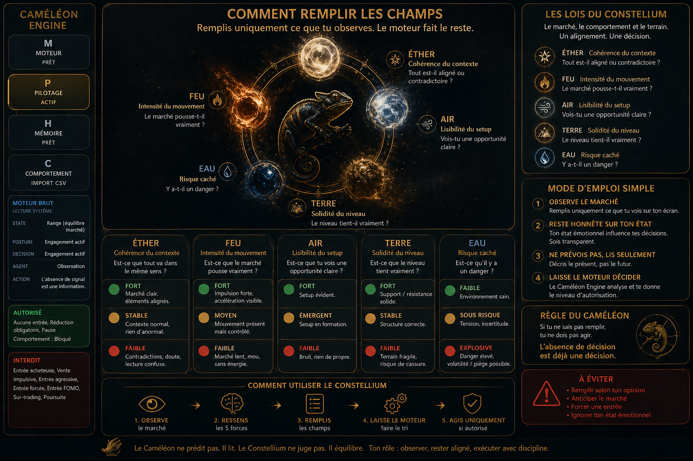

Le Constellium
Tu n'es pas là pour deviner le marché. Tu es là pour le lire.
Le Constellium n'est pas un second moteur.
C'est une aide à la lecture.
Il sert à remplir les champs avec plus de clarté, sans remplacer la décision du Caméléon Engine.
Constellium
Tu n'es pas là pour deviner le marché.
Tu es là pour le lire.
Le prix bouge, mais ce n'est que la surface.
En dessous, cinq forces décrivent l'état réel du contexte : la cohérence, l'intensité, la lisibilité, la solidité et le risque.
Le Constellium ne te dit pas quoi faire.
Il t'aide à voir plus clairement.
Tu remplis ce que tu observes.
Le moteur fait le tri.

Les cinq forces
Éther
Cohérence du contexte
Question : est-ce que tout va dans le même sens ?
FortMarché clair, éléments alignés.
StableContexte normal, rien d'anormal.
FaibleContradictions, doute, lecture confuse.
Feu
Intensité du mouvement
Question : est-ce que le marché pousse vraiment ?
FortImpulsion forte, accélération visible.
MoyenMouvement présent mais contrôlé.
FaibleMarché lent, mou, sans énergie.
Air
Lisibilité du setup
Question : est-ce que tu vois une opportunité claire ?
FortSetup évident.
ÉmergentSetup en formation.
FaibleBruit, rien de propre.
Terre
Solidité du niveau
Question : est-ce que le niveau tient vraiment ?
FortSupport / résistance solide.
StableStructure correcte.
FaibleTerrain fragile, risque de cassure.
Eau
Risque caché
Question : est-ce qu'il y a un danger ?
FaibleEnvironnement sain.
Sous risqueTension, incertitude.
ExplosiveDanger élevé, volatilité / piège possible.
Comment utiliser le Constellium
1.Observe le marché.
2.Ne cherche pas à prédire.
3.Choisis simplement ce que tu vois.
4.Si tu hésites, choisis le niveau le plus prudent.
5.Si plusieurs champs sont flous, ne fais rien.
Règle du Caméléon
si tu ne sais pas remplir,
tu ne dois pas agir.
tu ne dois pas agir.
L'absence de décision est déjà une décision.
Lecture rapide
Éther
Tout est-il aligné ou contradictoire ?
Feu
Le marché pousse-t-il vraiment ?
Air
Vois-tu un setup clair ?
Terre
Le niveau tient-il vraiment ?
Eau
Y a-t-il un danger caché ?
Si tu ne sais pas comment remplir ces champs :
- → ne fais rien
- → observe uniquement
Une mauvaise lecture crée une mauvaise décision.